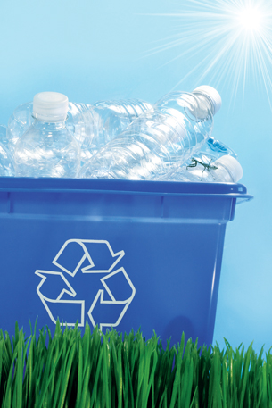

Module 6—Petrochemicals
Lesson 5—Addition Polymers
 Get Focused
Get Focused

© Sandra Cunningham/shutterstock
In Lesson 4 you learned that an esterification reaction involves a synthesis, or joining, of molecules. Many of the petrochemical industry’s products involve synthesis reactions—the most important example of this is plastics. In Lessons 5 and 6 you will learn how addition and condensation reactions can be used to synthesize different types of plastics.
Although many people recycle the plastics they use, estimates suggest that only five percent of the plastic created (as an off-shoot of the petrochemical industry) is recycled. This low recycling rate is due, in part, to the lack of incentive to get people to recycle plastics and the lack of a market for recycled plastics.
Not all plastics are recyclable. You can identify whether an item is recyclable by looking for the recycling code on the product. The number within the code indicates the composition of the plastic. Recyclable plastics include polyethylene, polyvinyl chloride, polypropylene, and polystyrene. You will explore these plastics in this lesson.
You may recall examining the chemical structures of these compounds in Lesson 1 of this module. What aspect of the chemistry of these substances allows them to be made into plastics?
Consider the following questions as you complete Lesson 5:
- What is the process used to make plastic?
- What properties must molecules have if they are to be used in making plastic?
 Module 6: Lesson 5 Assignment
Module 6: Lesson 5 Assignment
There is no assignment for this lesson. However, you will be asked to submit samples of your work to your teacher where instructed.
You must decide what to do with the questions that are not marked by the teacher.
Remember that these questions provide you with the practice and feedback that you need to successfully complete this course. You should respond to all the questions and place those answers in your course folder.